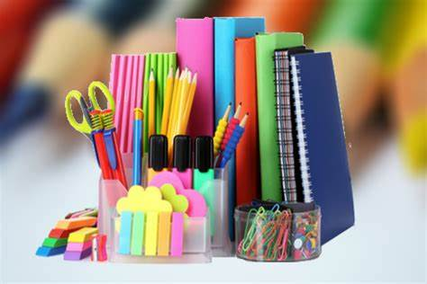

Overview Of SitaRam Stationary

Founded in 1997
Some quick example text to build on the card title and make up the bulk of the card's content.

3 Branches in Delhi
Some quick example text to build on the card title and make up the bulk of the card's content.
Awarded Best Shop
Some quick example text to build on the card title and make up the bulk of the card's content.